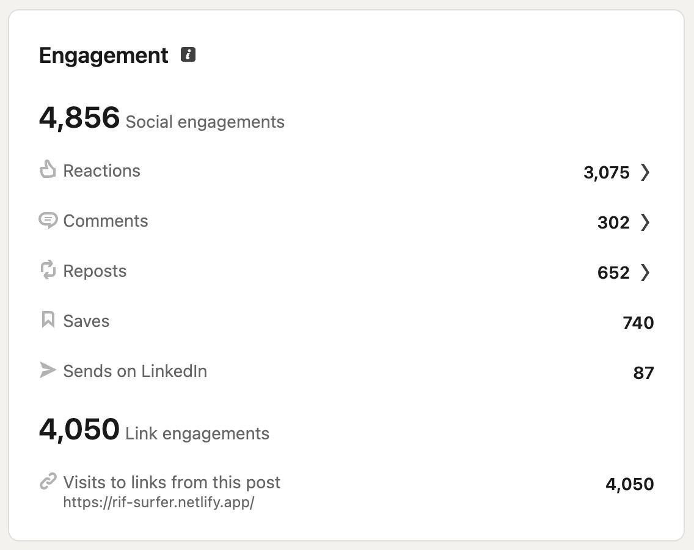
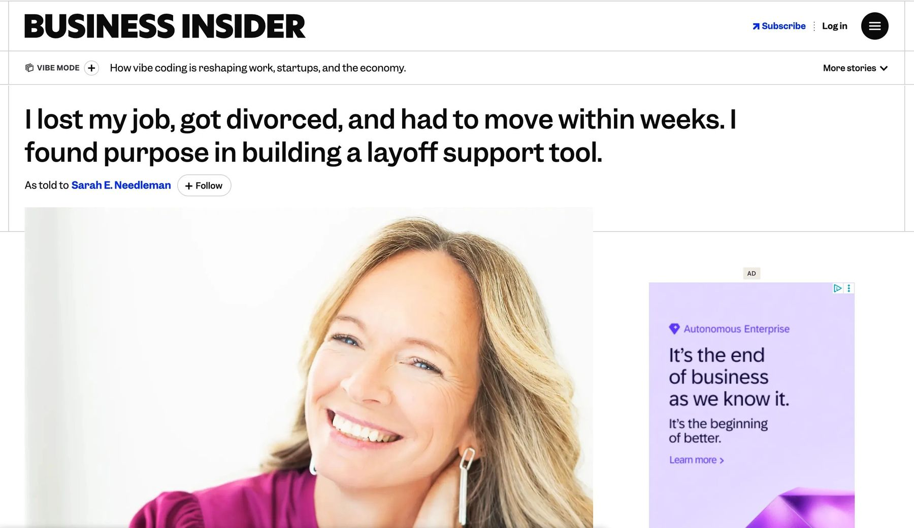

Independent Build · RIF Surfer
RIF Surfer: designing for the worst week of someone's life
Built solo in one week after my own layoff, using Claude as a coding collaborator, RIF Surfer puts unemployment, health coverage, SNAP, and rental assistance in one place, by state, in plain language. Free, always.
rif-surfer.netlify.app →
RIF Surfer, live: benefits and support filtered by state, one page, no dead ends.
The spark
I got laid off. Not hypothetically. Actually laid off, with three daughters, a move to plan, and a lot of uncertainty about what came next.
In the first few days, I did what I always do. I mapped the problem. I knew benefits existed: unemployment insurance, COBRA alternatives, SNAP, rental assistance, free therapy. But finding them felt like a second job. Every search led to a different government site, written as if you already knew what to ask for.
I did not want to just navigate it for myself. I wanted to fix it for everyone. So I opened a conversation with Claude and started building.
The problem
When you lose your job, the clock starts immediately. COBRA has a 60-day window. Unemployment claims have deadlines. SNAP takes time to process. But the information is scattered across dozens of government sites, written in bureaucratic language, with no single place that makes sense of it all.
“The person who needs this most is the least equipped to find it.”
The solution
RIF Surfer puts everything in one place: benefits, programs, and community resources filtered by state, in human language, with direct links to take action. Free, always.
RIF Surfer, live: benefits and support filtered by state, badged by cost and urgency, one page, no dead ends.
Design principles
This tool needed to work for someone at their worst moment, stressed, scared, possibly on their phone at 11pm. Every decision had to prioritize clarity over cleverness. I drew inspiration from the GOV.UK design system, built specifically for people navigating high-stakes services under stress. Three principles guided everything.
Color carries meaning, badges signal urgency, cost, and federal vs. state status at a glance. Nothing decorative.
Every link goes to an official government or vetted nonprofit source.
High contrast, plain language, keyboard navigable. Not a checklist, the brief.
The AI workflow
I built RIF Surfer in a week using Claude as a coding collaborator, and I want to be clear about what that means. I directed every decision: the GOV.UK inspiration, the color system, badge semantics, content, copy, and each iteration. Claude generated code based on my direction, fast implementation, but no taste, judgment, or understanding of what it feels like to need this tool at the worst moment of your professional life.
I worked with Claude like I would with an engineer. I owned the design, the code was AI assisted. This is how senior designers are starting to work: directing AI, critiquing its output, and protecting the design vision through iteration.
Key design decisions
GOV.UK over a custom design system. I didn't invent a visual language. I used one built for people in high-stakes, stressful situations. That's a design decision, not a shortcut.
Badges over color-coded categories. Early versions used icon colors to signal category. I kept icons neutral and moved meaning to badges (urgent, federal, state, free, community) for clearer hierarchy and better accessibility.
Search inline with tabs. A separate search row added visual noise. Moving it flush right on the tab row kept filtering controls in one line.
The name. After a dozen options, RIF Surfer won because RIF (Reduction In Force) is the insider term laid-off corporate workers recognize, signaling credibility to the right audience.
State-specific links for all 50 states. Each state has its own unemployment, Medicaid, and SNAP portal. Generic federal links can feel like a dead end, so getting the right link for every state was a content and UX decision.
What shipped
A fully functional, publicly accessible web tool built in one week.
- 21 benefit cards across 6 categories: income, health, family, housing, job search, and wellness
- State-specific links for all 50 states across unemployment, Medicaid, and SNAP
- Tab filtering and inline search
- First-week checklist with progress bar
- Community contribution via Google Forms
- Fully responsive, mobile-first
- Live at rif-surfer.netlify.app
- Buy Me a Coffee support button added to help sustain free access and ongoing updates
The real thing, live on a phone: picking a state and scrolling through what it finds.
Results
The LinkedIn post announcing the tool went live at 9AM on a Thursday. Within 12 hours: 106 reactions, 21 reposts, and 9 comments, including reposts from HR, org leadership, career coaching, and product design.
In the first week: 3,075 reactions, 652 reposts, 302 comments, 740 saves, and 148,087 impressions, driving 4,050 visits back to the live tool. Netlify featured the tool to 36,000 followers, reaching people across the UK, Ireland, Canada, South Africa, and the Netherlands.
But the number that matters most is not on LinkedIn. Within days, the community improved the tool in real time. Washington D.C. was added, Headspace was removed, Pennie was corrected, SNAP turnaround guidance was added, and we clarified that severance does not disqualify you from unemployment or SNAP.

Final LinkedIn engagement on the launch post.
“Been out of work 6 months and my savings is running low. I now need these things.”
— Susan Michalski
“Getting laid off is already a gut punch. Then you have to figure out unemployment, insurance, bills, job searching, and all the other stuff nobody really prepares you for. Respect to you for taking a hard moment and turning it into something that can actually help people.”
— Michael Gonzalez, General Manager
Press
Three weeks after launch, Business Insider featured RIF Surfer in their “As Told To” series, a first-person account in my own words, as told to Sarah E. Needleman. The piece covers what led to building RIF Surfer, from nearly missing my health coverage enrollment window to using AI as a coding collaborator, and why normalizing asking for help after a layoff matters.

“I lost my job, got divorced, and had to move within weeks. I found purpose in building a layoff support tool.” Read it on Business Insider →
What's next
RIF Surfer is live and being tested in the wild. Community feedback is already improving it: state links corrected, outdated resources removed, and new categories suggested. Here's what's next.
Privacy-friendly analytics. Now live via Plausible, tracking usage, states selected, resources clicked, and traffic sources to guide future decisions.
V2 in Framer with a CMS. Moving to a CMS means updating resources is a content edit, not a code change. This also makes it easier to publish community contributions. Potentially adding AI search so people can find what they need faster.
More resources. The Google Form is already collecting suggestions. Each submission shows what's missing for people in real situations.
A stepped guide. For people who feel overwhelmed and need a different kind of support.
Outplacement partnerships. RIF Surfer could be free for individuals and licensed to HR teams and outplacement firms as a white-label tool.
A community layer. The next version could include its own space for people to share what worked, what didn't, and what they wish they'd known.
An agent that keeps itself current. Instead of just flagging a dead link, an agent that goes out, checks each program's page, and updates the details here automatically, so the content stays accurate without someone doing it by hand.
Tell it your situation. Instead of browsing categories, describe what's going on, layoff date, state, kids, income, and an agent matches you to the specific programs that actually apply, not the full list.